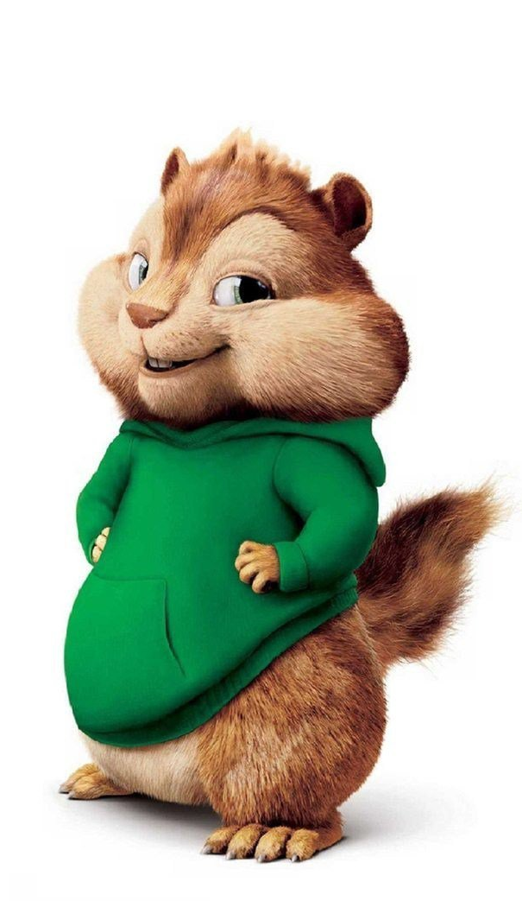

Сибирский бурундук - один из самых маленьких белок в мире. Обитает в лесах Сибири, где питается орехами, семенами и грибами. Длина его тела составляет около 12-15 см, а ве с - до 100 г. У него характерный черно-белый окрас, кот орый помогает ему маскироваться в лесу.
Восточноамериканский бурундук похож на сибирского, но имеет более яркий красно-коричневый окрас. Он обитает в восточн ых частях Северной Америки, где питается семенами, орехам и и ягодами. Длина его тела достигает 25 см, вес - 1 кг.

Мультипликационные бурундуки - это вымышленные персонажи, ко торые часто появляются в мультфильмах и комиксах. Они обычн о имеют яркий окрас и преувеличенные черты, такие как больш ие глаза и пушистый хвост.